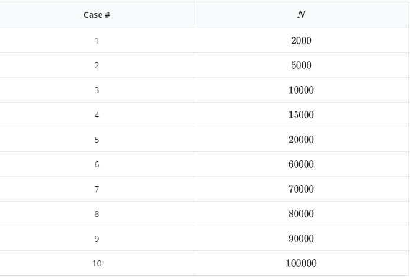

已知平面内 $N$ 个点的坐标，求欧氏距离下的第$K$远点对。
两个点 $P(x_1, y_1)$ 和 $Q(x_2, y_2)$ 的欧氏距离定义为 $d(P, Q) = \sqrt {(x_1 - x_2)^2 + (y_1 - y_2)^2}$。
输入第一行为用空格隔开的两个整数 $N, K$。
接下来 $N$ 行，每行两个整数 $X, Y$，表示一个点的坐标。
输出第一行为一个整数，表示第 $K$ 远点对的距离的平方（一定是个整数）。
10 5 0 0 0 1 1 0 1 1 2 0 2 1 1 2 0 2 3 0 3 1
9

对于所有测试点，$1 \leq K \leq 100, K \leq \frac {N(N-1)} {2}, 0 \leq X, Y \lt 2^{31}$。
 Comet OJ
Comet OJ